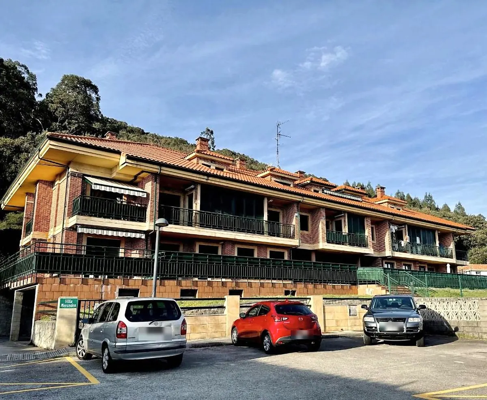

Appartement de vacances à Santoña, CantabrieVilla Mercedes
Votre maison avec jardin, à deux pas de la plage de Berria.
- 60 m²Logement entier
- 2Chambres
- 2Salles de bains
- Jardinet terrasse
- 16 minà pied de Berria


Résidence Villa Mercedes
Sur ordinateur : vidéo générée par IA à partir de photos réelles. Sur mobile : photos réelles.
60 m² pensés pour se reposer. Deux chambres, deux salles de bains, une cuisine tout équipée et un jardin au pied de la colline verdoyante. Réservation directe, sans intermédiaire.
L’essentiel en un coup d’œil
Voir le plan de la maison
Salon
Lumière naturelle et accès direct au jardin.

Jardin
Table extérieure pour six et coin canapés.

Cuisine
Entièrement équipée, avec accès à la terrasse.

Chambres
Une chambre double et une chambre à deux lits.

Salles de bains
Deux salles de bains : baignoire et douche.

Emplacement
Une résidence calme à Santoña.
Tout est à sa place
- Surface du logement
- 60m²
- Chambres
- 2
- Salles de bains
- 2
- Minutes à pied jusqu’à la plage de Berria
- 16min
- Note d’emplacement sur Booking.com
- 8,8
La maison telle qu’elle est
Photos réelles de l’appartement et de la résidence.


Santoña à pied
Entre le mont Buciero et les marais, au centre de la côte cantabrique.
16 minà pied jusqu’à Berria
Schéma indicatif, pas à l’échelle
Distances
- Plage de Berria16 min à pied
- Aéroport de Santander40 km
- Santanderenv. 42 km
- Bilbaoenv. 1 h en voiture
Pourquoi réserver en direct
Sans frais de plateforme
Vous réservez avec nous, sans intermédiaire.
Contact direct
Nous vous répondons nous-mêmes, en espagnol, anglais ou français.
Conditions claires
Prix, caution et annulation par écrit avant de confirmer.
Réservez en direct, sans frais
Vous parlez avec nous, pas avec une plateforme.